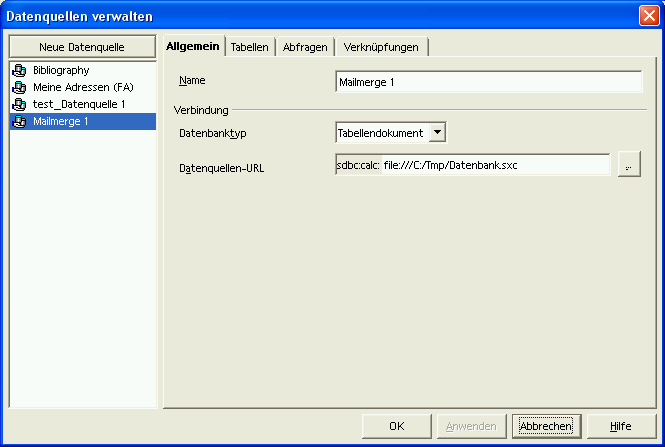
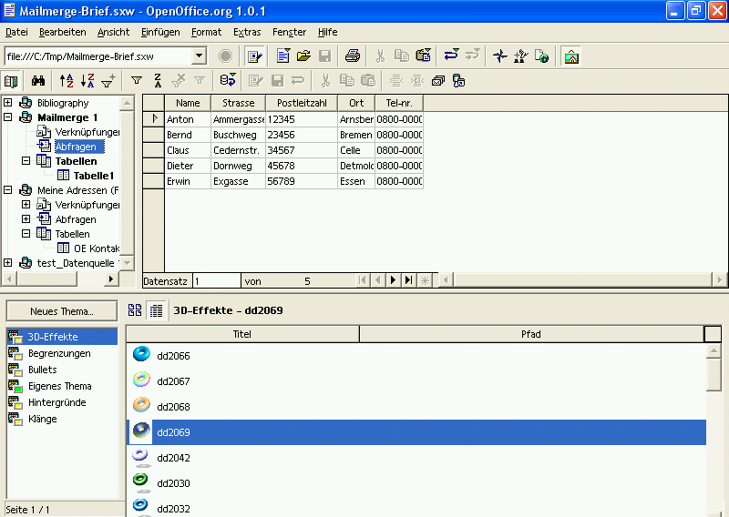
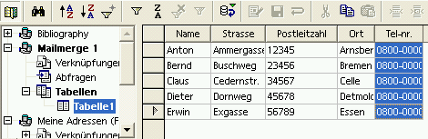
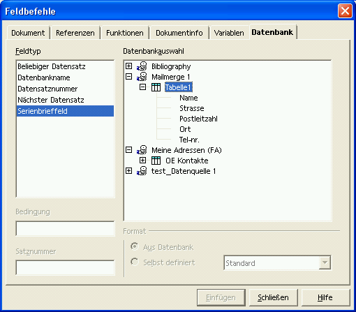
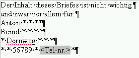
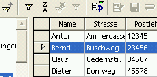
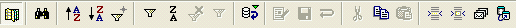
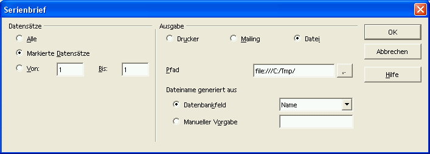
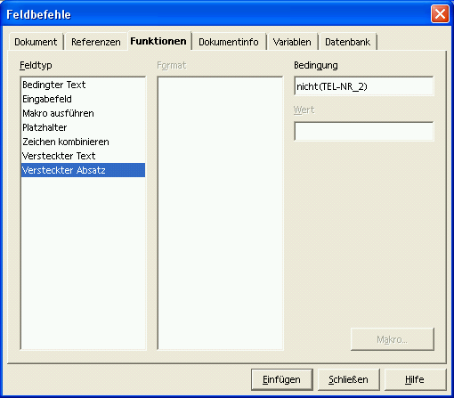

Diese Anleitung bezieht sich auf die Programmversion 1 von OpenOffice.org. Die vollständige Liste aktueller Dokumentationen finden Sie im Dokumentationsportal.
Wie Sie einen Serienbrief mittels Calc und Writer erstellen
zur Verfügung gestellt durch
das OpenOffice.org Dokumentations-Projekt
Inhaltsverzeichnis
- Erzeugen einer Datenbankquelldatei
- Erzeugung einer Vorlage
- Verknüpfen der Datenbank Quelldatei mit der Vorlage
- Kniffe für die Gestaltung der Vorlage
- Mitwirkende
1. Erzeugung einer Quelldatei
Um einen Serienbrief in OpenOffice.org zu erstellen, müssen
Sie ein Kalkulationsblatt in eine Datenbankquelldatei umwandeln.
Legen Sie hierzu eine Tabelle an, indem Sie in der Menüzeile
Neu > Tabellendokument anklicken.
Wählen
Sie als Spaltenüberschriften die entsprechenden Platzhalter
(z. B. Name, Straße, Ort, ...) und tragen Sie in die entstandenen Spalten die benötigten
Daten ein.
Wenn Sie Ihr Kalkulationsblatt mit den Daten vervollständigt haben, klicken Sie Datei > Speichern um Ihre Daten im Calc-Format „sxc“ zu speichern. Sie müssen dazu einen Dateinamen vergeben, aber lassen Sie die Datei geöffnet.
Im Menü Extras wählen Sie Datenquellen...

Auf der linken Seite können Sie möglicherweise bereits erzeugte und registrierte Quelldateien sehen. Sie müssen, wenn Sie die nachfolgenden Schritte abgearbeitet haben, nur zu der Position blättern, in der Sie Ihre Daten gespeichert haben, um sie auszuwählen.
Drücken Sie Neue Datenquelle im linken Teil des Dialogs.
Rechts können Sie dafür einen Namen vergeben.
Unter dem Punkt Verbindung > Datenbanktyp wählen Sie den Typ des Dokuments, das Sie als Datenquelle verwenden wollen.
In diesem Fall wählen Sie in der Drop-Down Liste Tabellendokument.Unter dem Punkt Datenquellen-URL stellen Sie sicher, dass Ihr Kalkulationsblatt ausgewählt wurde (drücken Sie ...), wählen Sie die Quelldatei aus und drücken Sie danach Öffnen.
Klicken Sie OK und Ihre Datenquelle ist für einen Serienbrief bereit.
Hinweis: Mit dieser Methode können Sie unter Datenquellen-URL auch andere Datenbanktypen (z.B. Adressbuch) auswählen und als Quelldatei verwenden.
2. Erzeugen einer Vorlage
Öffnen Sie ein neues Textdokument über Datei > Neu > Textdokument
Schreiben Sie den Inhalt Ihres Briefes. Sie brauchen in diesem Moment die Adressfelder noch nicht einzusetzen. Sie können einen Stern (*) als Platzhalter eingeben, um sich, wenn Sie den Brief weiterbearbeiten, zurecht zu finden.
Sobald Sie den Brief fertig haben, speichern Sie mittels Datei > Speichern; vergeben Sie einen Dateinamen, aber schließen Sie die Datei noch nicht.
Für Windows-Anwender:
Im Menü Ansicht wählen Sie Datenquellen (oder drücken Sie die Taste F4.)

Die registrierten Quelldaten werden am Bildschirm angezeigt und Sie müssen lediglich die Quelle auswählen mit der Sie arbeiten wollen:
Drücken Sie das kleine Plus, das neben dem Dateinamen steht, um den Baum auf der linken Seite des Dialogs aufzuklappen. Dann klicken Sie das kleine Plus neben Tabellen. Der Eintrag Tabelle1 erscheint. Anschließend bestätigen Sie Tabelle1 mit einem Klick und Sie sehen die Felder und deren Inhalt auf der rechten Seite.
Nun müssen Sie die Felder mit Ihrem Dokument verknüpfen.
Klicken Sie auf den Namen (oder einen anderen gewünschten Eintrag) und halten Sie die Maustaste gedrückt.

Während Sie die Maustaste gedrückt halten, ziehen Sie das Feld zum Platzhalter mit dem Stern und lassen Sie es los (den * können Sie dann löschen). Das Feld wird in Ihrem Dokument angezeigt.
Für Linux-Anwender (z.B. unter KDE) und als Alternative:
Gehen Sie im Menü Einfügen auf Feldbefehl. Dann wählen Sie Andere... und wählen dort die Karteikarte Datenbank, wo Sie wiederum Serienbrieffeld auswählen. Dann erscheint auf der rechten Seite Ihre Datenquelle. Drücken Sie das kleine Plus links neben der von Ihnen verwendeten Datenquelle und Tabelle1 erscheint. Jetzt betätigen Sie das Plus links neben Tabelle1 und Ihre in der Quelldatei verwendete Spaltenüberschrift erscheint. Setzen Sie den Cursor an die Stelle in der Formatvorlage neben den Platzhalter (*), an die Sie die Spaltenüberschrift setzen wollen. Wählen Sie den gewünschten Feldnamen und drücken Sie Einfügen in der geöffneten Maske Feldbefehl.
Jetzt können Sie die Maske Feldbefehl schließen.

Wiederholen Sie diesen Vorgang für alle anderen Felder, die Sie angelegt haben. Wechseln Sie die Zeilenposition, um die anderen Adressfelder an der richtigen Position einzufügen.

Wenn Sie alle Felder eingefügt haben, können Sie die Felder mit der Quelldatei verknüpfen.
3. Verknüpfung der Quelldatei mit der Vorlage
Wählen Sie im Menü Ansicht Datenquellen aus oder drücken Sie F4 .

Wählen Sie die benötigten Datensätze aus.
Wollen Sie alle Datensätze auswählen, klicken Sie das graue Rechteck ohne Beschriftung in der linken oberen Ecke der Tabelle an, um alle Datensätze zu markieren. Andernfalls können Sie, falls gewünscht, den Inhalt nur eines Feldes auswählen, indem Sie die Kopfzeile im Feld anklicken. Wenn Sie den Inhalt aller Felder eines Datensatzes wünschen, drücken Sie zweimal das graue Feld, das links vor dem Datensatz angezeigt wird. Ein kleiner Pfeil erscheint und der Datensatz wird hervorgehoben. Um Datensätze, die nicht unmittelbar aufeinander folgen, auszuwählen, halten Sie die STRG-Taste gedrückt, während Sie Ihre Auswahl treffen.
Jetzt ist Ihr Serienbrief fertig und Sie können ihn ausgeben.
Auf der Symbolleiste des Bildschirms Ihrer Datenbank-Quelldatei zeigt das vorletzte Symbol vier Briefe. Klicken Sie es an um den Dialog Serienbrief zu erhalten:


OpenOffice.org stellt Ihnen die Möglichkeit zur Verfügung, den Serienbrief zu drucken, in eine Datei auszugeben oder als E-Mail zu versenden. Wählen Sie die passende Möglichkeit, mit der Sie die Datensätze ausgeben wollen. Wenn Sie Datei wählen, wie in unserem Beispiel, müssen Sie ein Verzeichnis für die zu erzeugenden Dateien angeben, indem Sie auf das Symbol mit den drei Punkten auf der rechten Seite des Eingabefeldes Pfad klicken. Dann können Sie ein Verzeichnis auswählen.
Dort wird pro Datensatz eine Datei erzeugt. Die Dateien heißen <Dateiname>0; <Dateiname>1; usw. Sie können der Datei einen beliebigen Namen geben, entsprechend jedes beliebigen Feldes Ihrer Datenquelle. Wählen Sie dazu ein Feld aus der Liste Datenbankfeld aus. Möchten Sie einen anderen Namen Ihrer Wahl vergeben klicken Sie auf Manuelle Vorgabe
Nun ist der Vorgang beendet.
4. Kniffe für die Vorlagengestaltung
Sie werden sich fragen, ob das Ergebnis bei der Verwendung dieser Methode perfekt ist. Sind alle Namen in der gewünschten Zeile enthalten? Gibt es Lücken in einem Feld? Wie können Sie Leerzeilen vermeiden, wenn einige Adressen eine Zeile und andere zwei Zeilen benötigen? Dies sind nur einige der Fragen, die wir im Folgenden beantworten wollen.
Wie können Sie die Reihenfolge der Feldnamen in Ihrer Vorlage kontrollieren?
Sie können die Daten in Ihrem Dokument anzeigen, bevor Sie es versenden.
Um dies zu erreichen, werfen Sie einen Blick auf die Symbolleiste des OpenOffice.org-Fensters:
Das dritte Symbol von rechts nennt sich Daten in Felder.
Wählen Sie einen Datensatz aus und klicken Sie auf das Symbol, um die Felder Ihrer Vorlage durch die Daten des angewählten Datensatzes zu ersetzen.
Sie können den Vorgang so oft wie nötig wiederholen, um die Seitengestaltung zu kontrollieren und Ihre Formatvorlage so anzupassen, dass alle Adressen korrekt angezeigt werden.
Sie müssen die Datensätze nicht wieder anwählen, nachdem Sie mit der Überprüfung fertig sind.
Wie löschen Sie Leerzeilen im Adressfeld?
Angenommen in unserer Vorlage enthält das Feld TEL-NR_2 keine Daten.
Setzen Sie den Cursor vor das Feld TEL-NR_2 in Ihrer Formatvorlage. Drücken Sie die Tastenkombination STRG+F2 um das Dialogfenster der Felder zu öffnen.
Wechseln Sie auf die Seite Funktionen.

Wählen Sie den Befehl Versteckte Absätze und geben Sie in dem Bedingungsfeld nicht(Feldname) ein. In unserem Beispiel ist das nicht(TEL-NR_2). Dann drücken Sie auf die Einfügen Schaltfläche um die Funktion auf das Dokument anzuwenden.
5. Mitwirkende
Autor: Sophie Gautier
Danke an: alle Mitwirkenden an dieser Übersetzung
Zuletzt bearbeitet: 27. Oktober 2002
Kontakt: Ansprechpartner vom deutschen Sprachprojekt
Übersetzung: RPK-Kempten